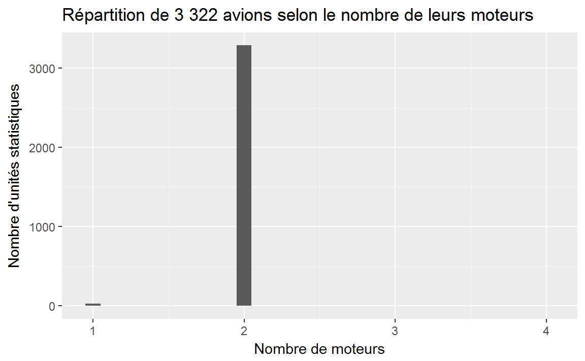
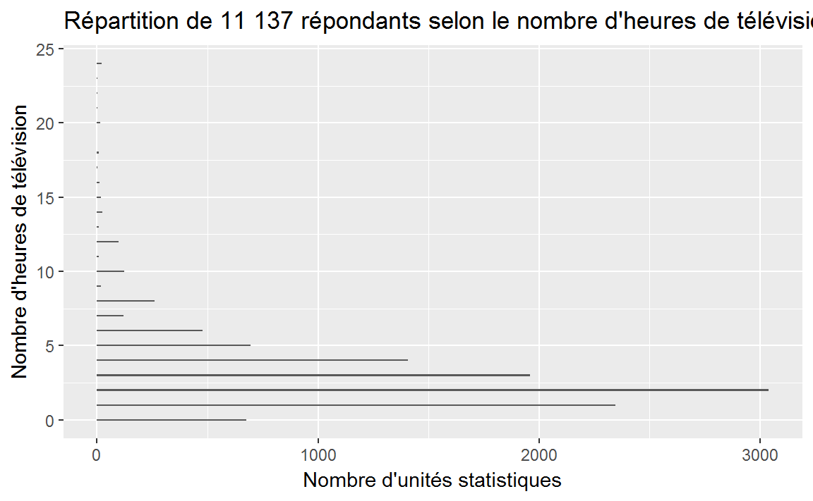

Chapitre 10 Les variables quantitatives discrètes
10.1 Mise en place
10.2 Tableau de fréquences
Une fois les données d’un sondage recueillies, il est plus aisé d’analyser ces données si elles sont classées dans un tableau.
Le tableau de fréquences que nous utiliserons est le suivant :
| Titre | |||
|---|---|---|---|
| Nom de la variable | Nombre d’unités statistiques | Pourcentage d’unités statistiques (%) | Pourcentage cumulé |
| (Valeurs) | (Fréquences absolues) | (Fréquences relatives) | (Fréquences relatives cumulées) |
| Total | n | 100% |
Le pourcentage cumulé permet de déterminer le pourcentage des répondants qui ont indiqué la valeur correspondante, ou une plus petite. Il sert à donner une meilleure vue d’ensemble.
Si pour la valeur \(x_i\) de la variable \(A\) la pourcentage cumulé est de \(b\) %, ceci signifie que \(b\) % des valeurs de la variable \(A\) sont plus petites ou égales à \(x_i\).
La commande freq prend comme argument la variable dont vous voulez produire le tableau de fréquences. Pour obtenir une sortie adéquate, il faut ajouter trois options à la commande:
cum = TRUE; permet d’afficher les pourcentages cumulésvalid = FALSE; permet de ne pas afficher les données manquantestotal = TRUE; permet d’afficher le total
Dans la base de données nycflights13::planes, nous allons afficher la variable engines. Dans la commande ci-dessous, nous enregistrons le tableau de fréquences dans la variable tab_engines. Nous l’affichons ensuite à l’aide de la commande kable.
| n | % | %cum | |
|---|---|---|---|
| 1 | 27 | 0.8 | 0.8 |
| 2 | 3288 | 99.0 | 99.8 |
| 3 | 3 | 0.1 | 99.9 |
| 4 | 4 | 0.1 | 100.0 |
| Total | 3322 | 100.0 | 100.0 |
Nous remarquons que le pourcentage cumulé pour les avions possédant 3 moteurs est 99.9%. Quelle est la signification de ce pourcentage? Ceci signifie que 99.9% des avions possèdent 3 moteurs ou moins.
Nous allons maintenant produire le tableau de fréquences de la variable tvhours de la base de données gss_cat. Cette variable correspond au nombre d’heures de télévision écoutées par jour (pour avoir cette information, vous pouvez utiliser la commande ?forcats::gss_cat). Nous avons:
| n | % | %cum | |
|---|---|---|---|
| 0 | 675 | 3.1 | 3.1 |
| 1 | 2345 | 10.9 | 14.1 |
| 2 | 3040 | 14.2 | 28.2 |
| 3 | 1959 | 9.1 | 37.3 |
| 4 | 1408 | 6.6 | 43.9 |
| 5 | 695 | 3.2 | 47.1 |
| 6 | 478 | 2.2 | 49.3 |
| 7 | 119 | 0.6 | 49.9 |
| 8 | 262 | 1.2 | 51.1 |
| 9 | 19 | 0.1 | 51.2 |
| 10 | 122 | 0.6 | 51.8 |
| 11 | 9 | 0.0 | 51.8 |
| 12 | 96 | 0.4 | 52.3 |
| 13 | 9 | 0.0 | 52.3 |
| 14 | 24 | 0.1 | 52.4 |
| 15 | 17 | 0.1 | 52.5 |
| 16 | 10 | 0.0 | 52.5 |
| 17 | 2 | 0.0 | 52.5 |
| 18 | 7 | 0.0 | 52.6 |
| 20 | 14 | 0.1 | 52.6 |
| 21 | 2 | 0.0 | 52.7 |
| 22 | 2 | 0.0 | 52.7 |
| 23 | 1 | 0.0 | 52.7 |
| 24 | 22 | 0.1 | 52.8 |
| NA | 10146 | 47.2 | 100.0 |
| Total | 21483 | 100.0 | 100.0 |
Répondez aux questions suivantes:
- Quel est le pourcentage des répondants qui écoutent la télévision 3 heures par jour? 9.1 %
- Quel est le pourcentage des répondants qui écoutent la télévision 14 heures par jour? 0.1 %
- Peut-on croire le résultat pour le pourcentage de gens qui écoutent la télévision 24 heures par jour?
- Quelle est la signification du pourcentage cumulé pour 6 heures? Nous avons que 49.3 % des répondants écoutent la télévision 6 heures ou moins par jour.
- Quelle est la signification du pourcentage cumulé pour 7 heures? Nous avons que 49.9 % des répondants écoutent la télévision 7 heures ou moins par jour. C’est-à-dire qu’environ la moitié des gens écoutent la télévision 7 heures ou moins par jour.
Nous pouvons produire le tableau de fréquences de la variable seats de la façon suivante:
| n | % | %cum | |
|---|---|---|---|
| 2 | 16 | 0.5 | 0.5 |
| 4 | 5 | 0.2 | 0.6 |
| 5 | 2 | 0.1 | 0.7 |
| 6 | 3 | 0.1 | 0.8 |
| 7 | 2 | 0.1 | 0.8 |
| 8 | 5 | 0.2 | 1.0 |
| 9 | 1 | 0.0 | 1.0 |
| 10 | 1 | 0.0 | 1.1 |
| 11 | 2 | 0.1 | 1.1 |
| 12 | 1 | 0.0 | 1.1 |
| 14 | 1 | 0.0 | 1.2 |
| 16 | 1 | 0.0 | 1.2 |
| 20 | 80 | 2.4 | 3.6 |
| 22 | 2 | 0.1 | 3.7 |
| 55 | 390 | 11.7 | 15.4 |
| 80 | 83 | 2.5 | 17.9 |
| 95 | 123 | 3.7 | 21.6 |
| 100 | 102 | 3.1 | 24.7 |
| 102 | 1 | 0.0 | 24.7 |
| 128 | 1 | 0.0 | 24.7 |
| 139 | 8 | 0.2 | 25.0 |
| 140 | 411 | 12.4 | 37.4 |
| 142 | 158 | 4.8 | 42.1 |
| 145 | 57 | 1.7 | 43.8 |
| 147 | 3 | 0.1 | 43.9 |
| 149 | 452 | 13.6 | 57.5 |
| 172 | 81 | 2.4 | 60.0 |
| 178 | 283 | 8.5 | 68.5 |
| 179 | 134 | 4.0 | 72.5 |
| 182 | 159 | 4.8 | 77.3 |
| 189 | 73 | 2.2 | 79.5 |
| 191 | 87 | 2.6 | 82.1 |
| 199 | 43 | 1.3 | 83.4 |
| 200 | 256 | 7.7 | 91.1 |
| 222 | 13 | 0.4 | 91.5 |
| 255 | 16 | 0.5 | 92.0 |
| 260 | 4 | 0.1 | 92.1 |
| 269 | 1 | 0.0 | 92.1 |
| 275 | 25 | 0.8 | 92.9 |
| 290 | 6 | 0.2 | 93.1 |
| 292 | 16 | 0.5 | 93.6 |
| 300 | 17 | 0.5 | 94.1 |
| 330 | 114 | 3.4 | 97.5 |
| 375 | 1 | 0.0 | 97.5 |
| 377 | 14 | 0.4 | 98.0 |
| 379 | 55 | 1.7 | 99.6 |
| 400 | 12 | 0.4 | 100.0 |
| 450 | 1 | 0.0 | 100.0 |
| Total | 3322 | 100.0 | 100.0 |
Comme nous pouvons le constater, le tableau est très grand car la variable seats possède 48 valeurs différentes. Nous allons donc parfois séparer nos valeurs en classes coomme nous le verrons au chapitre 11.
Important! Au chapitre 5, nous avons étudié les différents types de variables. Parmi les variables quantitatives, nous avons distingué celles qui étaient discrètes de celles qui étaient continues.Bien que cela s’applique toujours, il est important de noter qu’une variable continue (par exemple, l’âge) peut être traitée comme une variable discrète (puisque, de façon générale, les gens donnent un entier pour exprimer leur âge); de même, une variable discrète (par exemple, le revenu) peut être traitée comme une variable continue (puisque les différents revenus sont trop nombreux pour être énumérés).
10.3 Représentation graphique - Le diagramme à bandes
Le graphique utilisé pour représenter une variable quantitative discrète est le diagramme à bâtons.
Ce graphique est construit comme le diagramme à bandes rectangulaires verticales, sauf que les rectangles sont remplacés par des bâtons très minces (généralement une simple ligne). Pour modifier la largeur de vos lignes, vous utilisez l’option width dans la commande geom_bar().
ggplot(data = planes, aes(x = engines))+
geom_bar(width = 0.1)+
labs(
title = "Répartition de 3 322 avions selon le nombre de leurs moteurs",
x = "Nombre de moteurs",
y = "Nombre d'unités statistiques"
)
Vous pouvez produire un diagramme à bâtons horizontaux en utilisant la commande coord_flip().
ggplot(data = gss_cat, aes(x = tvhours))+
geom_bar(width = 0.1)+
labs(
title = "Répartition de 11 137 répondants selon le nombre d'heures de télévision écoutées par jour",
x = "Nombre d'heures de télévision",
y = "Nombre d'unités statistiques"
)+
coord_flip()
#> Warning: Removed 10146 rows containing non-finite values (stat_count).